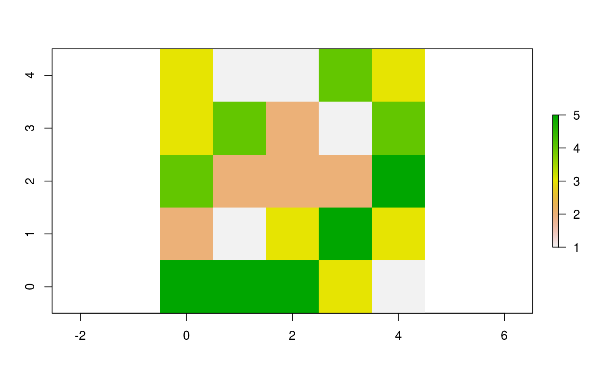

Report the patches or turtles among agents which have their variable
equals to the maximum value.
withMax(agents, world, var) # S4 method for matrix,worldMatrix,missing withMax(agents, world) # S4 method for matrix,worldArray,character withMax(agents, world, var) # S4 method for agentMatrix,missing,character withMax(agents, var)
| agents | Matrix (ncol = 2) with the first column "pxcor" and the second column "pycor" representing the patches coordinates, or AgentMatrix object representing the moving agents. |
|---|---|
| world | WorldMatrix or worldArray object. |
| var | Character. The name of the selected |
Matrix (ncol = 2) with the first column "pxcor" and the second column
"pycor" representing the coordinates of the patches among the agents
which have their variable
equal to the maximum value among the agents, or
AgentMatrix representing the turtles among the agents
which have their variable
var equal to the maximum value among the agents.
world must not be provided if agents are turtles.
Wilensky, U. 1999. NetLogo. http://ccl.northwestern.edu/netlogo/. Center for Connected Learning and Computer-Based Modeling, Northwestern University. Evanston, IL.
https://ccl.northwestern.edu/netlogo/docs/dictionary.html#with-max
# Patches w1 <- createWorld(minPxcor = 0, maxPxcor = 4, minPycor = 0, maxPycor = 4, data = sample(1:5, size = 25, replace = TRUE)) plot(w1)p1 <- withMax(agents = patches(w1), world = w1) # Turtles t1 <- createTurtles(n = 10, coords = randomXYcor(w1, n = 10), heading = sample(1:3, size = 10, replace= TRUE)) t2 <- withMax(agents = t1, var = "heading")